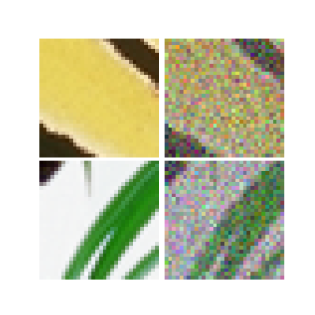
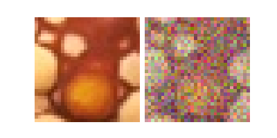

Note
Go to the end to download the full example code
Creating your own dataset
This example shows how to create your own dataset for deep image inverse problems from a base dataset of images. Here we use Set3C as a base dataset of natural images. This base dataset contains 3 images.
import deepinv as dinv
from pathlib import Path
import torch
from torch.utils.data import DataLoader
from torchvision import transforms
from deepinv.utils.demo import load_dataset
Setup paths for data loading and results.
Load base image datasets
We download the Set3 dataset which is a torchvision.datasets.ImageFolder dataset.
You can use any other dataset as long as it is a torch.utils.data.Dataset.
# Set the global random seed from pytorch to ensure reproducibility of the example.
torch.manual_seed(0)
device = dinv.utils.get_freer_gpu() if torch.cuda.is_available() else "cpu"
# Set up the variable to fetch dataset and operators.
dataset_name = "set3c"
img_size = 256 if torch.cuda.is_available() else 32
val_transform = transforms.Compose(
[transforms.CenterCrop(img_size), transforms.ToTensor()]
)
# add batch and channel dimensions
dataset = load_dataset(dataset_name, ORIGINAL_DATA_DIR, transform=val_transform)
# display an image from the base dataset
dinv.utils.plot(dataset[0][0].unsqueeze(0))
Downloading datasets/set3c.zip
0%| | 0.00/385k [00:00<?, ?iB/s]
17%|█▋ | 64.5k/385k [00:00<00:00, 625kiB/s]
49%|████▊ | 187k/385k [00:00<00:00, 878kiB/s]
100%|██████████| 385k/385k [00:00<00:00, 1.40MiB/s]
set3c dataset downloaded in datasets
Generate a dataset of degraded images and load it.
We use a simple denoising forward operator with Gaussian noise.
Note
dinv.datasets.generate_dataset() will ignore other attributes than the image,
e.g. the class labels if there are any.
n_channels = 3 # 3 for color images, 1 for gray-scale images
physics = dinv.physics.Denoising(dinv.physics.GaussianNoise(0.2))
# Use parallel dataloader if using a GPU to fasten training,
# otherwise, as all computes are on CPU, use synchronous data loading.
num_workers = 4 if torch.cuda.is_available() else 0
operation = "denoise"
measurement_dir = DATA_DIR / dataset_name / operation
dinv_dataset_path = dinv.datasets.generate_dataset(
train_dataset=dataset,
test_dataset=None,
physics=physics,
device=device,
save_dir=measurement_dir,
num_workers=num_workers,
)
dataset = dinv.datasets.HDF5Dataset(path=dinv_dataset_path, train=True)
# display an image from the base dataset
x, y = dataset[0]
dinv.utils.plot([x.unsqueeze(0), y.unsqueeze(0)])
Computing train measurement vectors from base dataset...
0%| | 0/2 [00:00<?, ?it/s]
100%|██████████| 2/2 [00:00<00:00, 101.96it/s]
Dataset has been saved in measurements/set3c/denoise
Create a dataloader
We iterate over the dataset using a dataloader, which will return a batches of pairs of signals and measurements.
Note
You can adapt this code to build your custom train function, in case that dinv.train()
doesn’t meet your needs.
batch_size = 2
dataloader = DataLoader(
dataset, batch_size=batch_size, num_workers=num_workers, shuffle=False
)
for x, y in dataloader:
dinv.utils.plot([x, y])
- 
- 
Total running time of the script: (2 minutes 13.094 seconds)